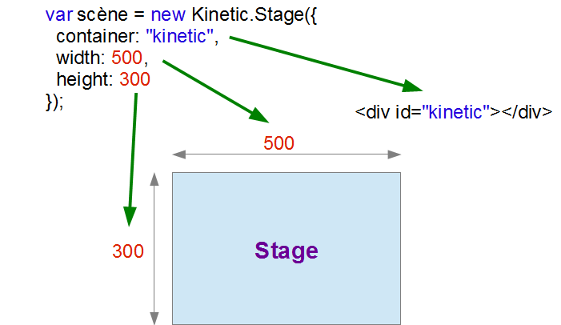

IPiloter canvas avec KineticJS
KineticJS est un framework Javascript qui permet d'utiliser plus facilement l'API Canvas du HTML5. Il étend
les possibilités de Canvas : groupes, calques, événements... Il permet également de réaliser des animations
très fluides par un système de buffers.
Pour suivre ce tutoriel, vous avez besoin de connaître Javascript. Si ce n'est pas le cas, commencez par vous
initier à ce langage, par exemple avec ce tutoriel.
Je ne donne aucune indication quant au fonctionnement
de
ce langage dans ce cours qui est axé uniquement sur l'utilisation de KineticJS .
I-1Premières formes
Dans ce premier chapitre nous allons voir comment démarrer avec KineticJS et dessiner des formes prédéfinies.
Mise en route
Canvas est une nouvelle fonctionnalité introduite avec le HTML5. Pour être honnête, c'est Apple qui l'a inventée et elle a été intégrée dans les spécifications du W3C et celles du WhatWG. Il existe de nombreuses librairies Javascript pour piloter Canvas :
- EaselJS
- jCanvaScript
- jCanvas
- Artisan JS
- oCanvas
- jcotton
- Fabric
- canvasxpress
- gury
- ...
Il me semble que KineticJS , créée et maintenue par Eric Drowell, est l'une des plus efficaces et elle est
d'autre part bien documentée.
Le site est plutôt bien fait et comporte de nombreuses démonstrations. Il y a avait un forum dédié que
j'aimais bien, mais il a disparu au profit de stackoverflow. Les tutoriels sont bien organisés et couvrent
presque toutes les fonctionnalités, on peut toutefois regretter le fait qu'ils soient souvent en retard sur
les options proposées.
Vous n'avez pas forcément besoin de savoir manipuler les commandes de base de l'API Canvas pour utiliser
KineticJS mais il est évident que vous utiliserez cette librairie de façon beaucoup plus efficace si vous avez
des notions concernant cette API.
Installation
Pour utiliser KineticJS vous devez d'abord télécharger la librairie sur le site pour obtenir à coup sûr la dernière version et la placer dans un répertoire de votre site. Au moment où j'écris ce tutoriel, la dernière version est la 4.0.4. Le lien ouvre directement le fichier dans votre navigateur :

Il suffit de faire un "Enregistrer sous..." pour placer le fichier dans un répertoire ("js" ou "librairies" ou autre). Pour ce tutoriel je le place dans un répertoire "js". Il suffit ensuite de le référencer sur les pages web :
Kinetic est l'espace de nom qui permet d'isoler tout ce que nous allons faire avec cette librairie. La première action est de créer une scène (Stage) pour contenir nos créations. Le constructeur de cet objet attend 3 paramètres. Le premier est l'identifiant du contenant HTML, dans notre cas cet identifiant est "kinetic". Les deux paramètres suivants définissent la largeur et la hauteur de la scène.
